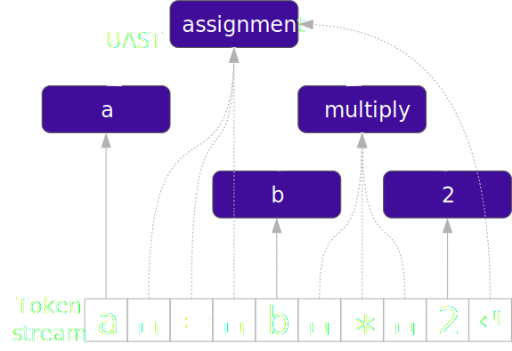
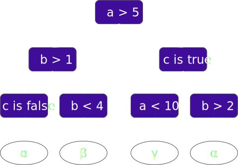
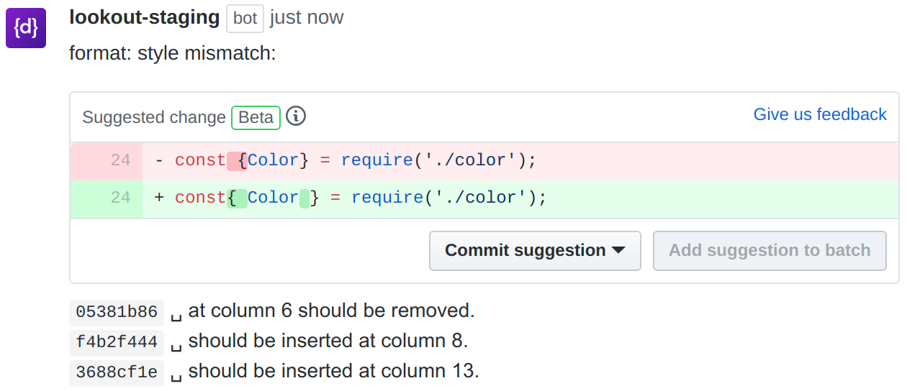

style-analyzer: fixing code style inconsistencies with interpretable unsupervised algorithms
Vadim Markovtsev, Hugo Mougard, Waren Long, Egor Bulychev, Konstantin Slavnov - source{d}.
style-analyzer: fixing code ⇥ style␣␣inconsistencies␣with "interpretable"↵'unsupervised' algorithms
Vadim Markovtsev, Hugo Mougard, Waren Long, Egor Bulychev, Konstantin Slavnov
source{d}
When to help?
- While you type = IDE
- While you check = CI
- While you review = PR
- Periodically, asynchronously
- Part of the workflow
- More time to run the models
- Nice UI
- High precision score required
- Longer feedback loop
Lookout

PR review comments on GitHub
dataset
"White box" is the key
- Builds trust with the users
- Provides interpretability
- Allows editing
- Allows blacklisting
Classes predicted
| ␣ |
space |
| → |
tabulation |
| ↲ |
newline |
| ␣+/- |
spaced indentation increase/decrease |
| →+/- |
tabulated indentation increase/decrease |
| '/" |
single/double quotes |
| ∅ |
empty gaps between non-label nodes, NOOP |
Labels predicted
We concatenate common classes together.
No BPE or similar reduction is required.
Annotated code snippet
∅function␣classesToArray∅(␣value␣)␣{↲
⇥ if␣(␣isArray∅(␣value␣)␣)␣{∅return␣value∅;∅}
if␣(␣typeof␣value␣===␣"string"␣)␣{↲
⇥ return␣value∅.∅match(␣rnothtml␣)␣||␣[]∅;↲
⇤ }↲
return␣[]∅;↲
⇤}∅
Augmented token stream

a = b * 2
Machine Learning

Machine Learning
- Feature selection (univariate, ANOVA F-criterion)
- Hyperparameter optimization (Bayesian)
- 80% + 20% split
Rules

a≤5 Λ b≤1 Λ c ⇒ αa≤5 Λ 1<b<4 ⇒ β5<a<10 Λ c ⇒ γa>5 Λ c Λ b>2 ⇒ α
Rules optimization
a>5 Λ c Λ b>2 Λ d Λ a>10 ⇒ α(merge)
a>10 Λ c Λ b>2 Λ d ⇒ α(redundant)
a>10 Λ c Λ d ⇒ α(feature exclusion)
a>10 Λ c ⇒ α(confidence threshold)
Result
- -90% rules with no quality loss
Redundant attributes elimination
- Trigger imbalance: <5% activation rate
- For each attribute comparison build the set of false positives
- Build graph by thresholding Jaccard similarity between each pair (0.98)
- Run multilevel community detection
- Leave only one representative (greedily)
Annotated code snippet
∅function␣classesToArray∅(␣value␣)␣{↲
⇥ if␣(␣isArray∅(␣value␣)␣)␣{∅return␣value∅;∅}
if␣(␣typeof␣value␣===␣"string"␣)␣{↲
⇥ return␣value∅.∅match(␣rnothtml␣)␣||␣[]∅;↲
⇤ }↲
return␣[]∅;↲
⇤}∅
Rule example
y = ∅
ŷ = ↲→+
Confidence: 0.975
Support: 3230
- -1.value = {
- -3.value not in {else}
- +1.internal_type not in {StringLiteral}
- +2.roles not in {LITERAL, COMMENT}
- ˆ1.roles in {IF, STATEMENT}
Inference
- Apply rules
- Fixes to old code?
- AST breakage?
- Identification?
- Generate code
- Indentation?
- Multiple lines?
Lookout comments on GitHub

Results
|
train samples |
rules |
precision |
prediction rate |
| node |
374,298 |
641 |
0.965 |
0.951 |
| jquery |
197,072 |
391 |
0.972 |
0.959 |
| axios |
21,130 |
143 |
0.940 |
0.951 |
| carlo |
5,529 |
78 |
0.878 |
0.931 |
| |
| average |
-- |
-- |
0.943 |
0.947 |
Enough quality for a product?
Other evaluation is required
Comparison to linters
|
style-analyzer |
linters |
| Precision |
✖ |
✔ |
| Interpretability |
✔ |
✔ |
| Context |
✔ |
✖ |
| Setup |
✔ |
✖ |
| Fixes |
✔ |
✖ |
But what if the project already uses a linter?
Mining Software Repositories
Clustering
Given codebases X and Y
style_distance(X, Y) - how similar are the formatting styles?
Common formatting rules analysis
Which formatting styles dominate on GitHub?
Summary
- style-analyzer infers code human-friendly formatting rules
- Reaches 94% precision at 95% prediction rate
- Is based on Lookout - assisted code review framework
- May be useful for general mining